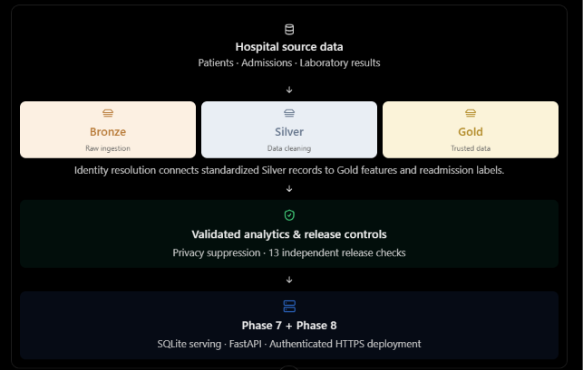

Open to full-time and contract roles
Cloud & Data Engineer
I’m Elijah Campbell. I build reliable cloud platforms and governed data pipelines, with measurable performance, validation and infrastructure outcomes. Explore the engineering decisions and evidence behind my work.
Emerging direction: MLOps and AI infrastructure, building on data quality and reliable delivery.
01 / About
Engineering systems that remain useful after deployment.
My work connects cloud infrastructure, data engineering, backend APIs, and operational reliability. I design for performance, data quality, observability, cost efficiency, and maintainability—not just successful demos.
Cloud PlatformsAWS, Azure, GCP, Terraform, Docker, CI/CD
Data PipelinesSpark, PySpark, Airflow, Kafka, dbt, ETL/ELT
Data PlatformsSnowflake, Redshift, BigQuery, PostgreSQL
OperationsTesting, monitoring, data quality, performance tuning
02 / Selected Work
Technical projects presented as engineering case studies.
Start with the outcomes; expand each study for engineering decisions and controls. Read the evidence register.
Serverless AWS · Synthetic financial data
GitHub repositoryZIPCO Financial Risk Intelligence Platform
From a broken flat-file model to a governed financial data lake, with measured scan efficiency and operational evidence.
Measured technical outcome
1,000,000 source records profiled. Documented Athena benchmark: 88.21% less scanning for equivalent full-history CSV versus Parquet queries; 95.55% additional scan reduction for the partition-pruned 2023 workload versus full-history Parquet.
How it works, controls & evidence
Business challenge
Make fragmented financial records trustworthy and economical to query without losing correctness or auditability.
Architecture & solution
S3 → Glue validation and Snappy Parquet → Glue Catalog → Athena analytics, supported by CloudWatch monitoring and security controls.
Quality & correctness
Schema contracts, reason-coded quarantine, result-signature reconciliation, encryption, access controls and replay safeguards.
Operational significance. Less data scanned supports more efficient analytics. Financial savings remain modeled implications; no realized cost saving is claimed.
Evidence boundary. Synthetic data. The 2023 comparison changes time scope as well as partition pruning. Percentages are documented benchmark results; raw per-run AWS JSON was not independently retrieved for this portfolio. No latency or production-scale claim.
Governed data · Synthetic healthcare case study
GitHub repositoryPATIENTRA Healthcare Data Engineering
Bronze → Silver → Gold data delivery with conservative cross-hospital identity resolution and controlled aggregate release.
Measured technical outcome
Historical synthetic release: 2,938 Gold admission records, 13/13 independent release checks passed, and 8 of 51 aggregate breakdown rows suppressed.
How it works, controls & evidence
Business challenge
Reconcile fragmented hospital extracts while preserving lineage, handling uncertain identity matches and limiting disclosure.
Architecture & solution
Immutable Bronze deliveries flow through Silver cleaning and identity resolution into Gold admission features, aggregate analytics and a release-gated API.
Quality & correctness
Quarantine ambiguous values, route uncertain matches to human review, verify hashes and row reconciliation, and suppress small aggregate cells.
Operational significance. A reviewable release boundary prevents unchecked or identifying outputs from reaching downstream consumers.

Evidence boundary. Synthetic demonstration, not clinical validation or healthcare production readiness. Historical release figures are separate from the hosted prototype’s frozen synthetic run. Demo data access may require a maintainer-issued token; free hosting may wake slowly.
Global hackathon · Three-person team project
GitHub repositoryProject RISING
A team-built climate-health intelligence platform connecting resilient ingestion and ETL with FastAPI and Streamlit.
My contribution. Commits attributed to DevDataMLOps document batch ETL extraction, transformation and validation, GitHub Actions testing, and API readiness, security and deployment hardening.
Measured technical outcome
A documented local failure-recovery drill returned HTTP 503 with a missing required dataset and HTTP 200 after restoration, on the first verification request.
How it works, controls & evidence
Business challenge
Keep fragmented climate and public-health data usable when records arrive late, malformed or duplicated.
Architecture & solution
Batch and event ingestion → validated, deduplicated data → explainable climate-health scoring → FastAPI and Streamlit.
Quality & correctness
Schema validation, bounded retry, buffering, checkpoints and dead-letter isolation; regression tests cover pipeline and API behavior.
Operational significance. Fail-closed readiness and recoverable ingestion make data availability failures visible to operators.
My ETL contribution My API & deployment contribution Architecture Recovery evidence Regression tests Deployment runbook Team dashboard
Evidence boundary. Team outcome, not sole authorship. Hackathon participation is documented; no unverified award or placement is claimed. Simulated events and a local readiness drill do not establish production recovery targets or clinical forecasting accuracy. The hosted Streamlit demo may be asleep; repository evidence remains available.
Batch ETL · BigQuery execution evidence
GitHub repositoryTelecom Data Revolution
A contract-driven telecom pipeline that separates trustworthy analytics data from rejected records before warehouse delivery.
Measured technical outcome
243,553 source records reconciled to 223,966 curated and 19,587 quarantined records. Checked-in BigQuery execution evidence confirms both destination counts.
How it works, controls & evidence
Business challenge
Prepare telecom churn records for analytics without silently discarding invalid data or obscuring load outcomes.
Architecture & solution
Mage orchestrates Python validation and transformation, loading curated, quarantine and append-only audit tables into BigQuery.
Quality & correctness
Explicit schema and domain checks, reason-coded quarantine, deterministic full-refresh loading and warehouse count verification.
Operational significance. Analysts receive contract-valid records while operators retain rejected records and an audit trail for investigation.
Evidence boundary. Repository profiling, verification code and an execution screenshot were reviewed; the source dataset is excluded from Git and cloud queries were not rerun. Production-style project, not a claim of production operation or reduced churn.
Live GitHub repositories
Automatically loaded from GitHub and sorted by recent activity.
03 / Architecture
A modern data platform, from ingestion to trusted delivery.
SourcesAPIs · Files · Events
IngestionKafka · Airflow
ProcessingSpark · dbt
WarehouseSnowflake · Redshift
DeliveryAPIs · BI · Analytics
Design for failure
Retries, validation, idempotency, monitoring, and recovery are part of the architecture.
Automate the platform
Infrastructure as code and CI/CD make environments repeatable, reviewable, and safer.
Measure the outcome
Performance, cost, reliability, and data quality are engineering outputs—not afterthoughts.
04 / Experience
Hands-on delivery across data and cloud systems.
Project-based training
Amdari · Project-based training
Cloud & Data Engineering
ZIPCO and Telecom Data Revolution provided project-based engineering practice in AWS data platforms, governed pipelines, BigQuery delivery and validation. Outcomes are documented in the case studies above.
2026
Global hackathon · Three-person team
Project RISING
Contributed batch ETL extraction, transformation and validation, automated testing, and API readiness and deployment hardening. Linked DevDataMLOps commits distinguish my contributions from the three-person team’s overall platform.
05 / Technology
Tools selected around real platform responsibilities.
Languages & APIs
Python · SQL · Java · Bash · FastAPI · Flask · REST
Data Engineering
Spark · Airflow · Kafka · dbt · Kinesis · ETL/ELT · Dimensional Modeling
Cloud & Infrastructure
AWS · Azure · GCP · Terraform · Docker
Warehousing & Storage
Snowflake · Redshift · BigQuery · PostgreSQL · MySQL · MongoDB
Quality & Observability
Pytest · Data Validation · Datadog · Prometheus · Grafana
Delivery
Git · GitHub Actions · CI/CD · Agile · Architecture Documentation · Stakeholder Collaboration
Let’s work together
Need a dependable Data or Cloud engineer?
I’m open to full-time and contract Cloud & Data Engineering roles.